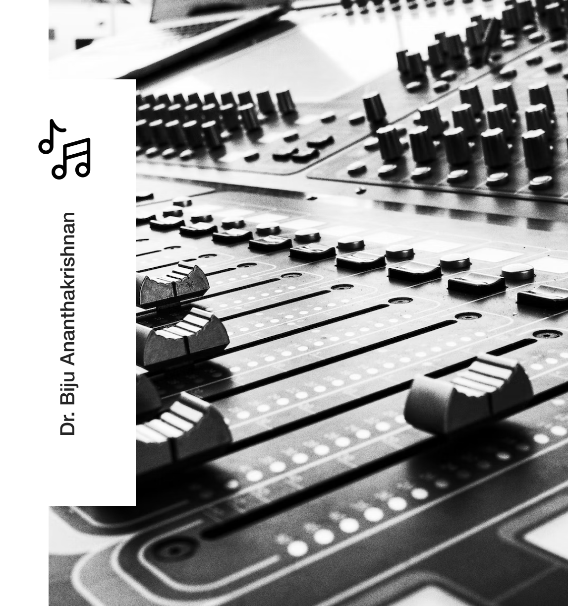
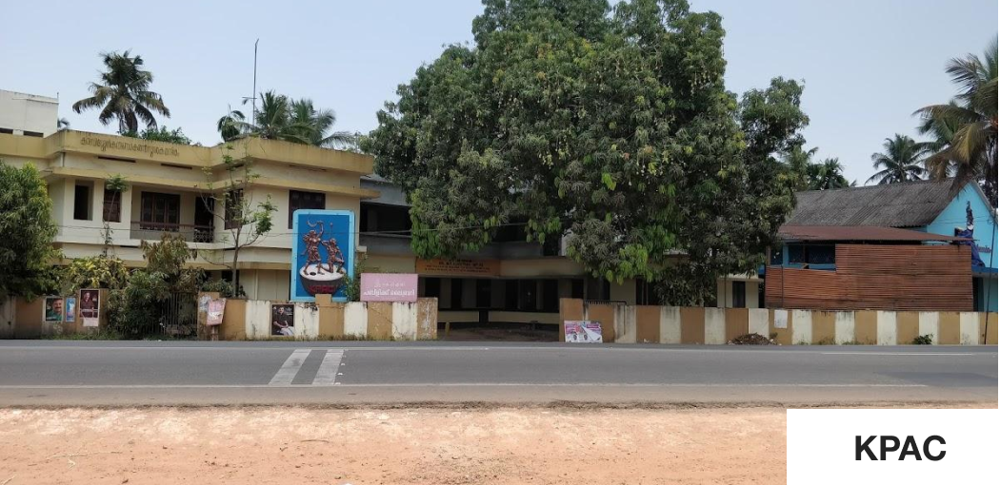
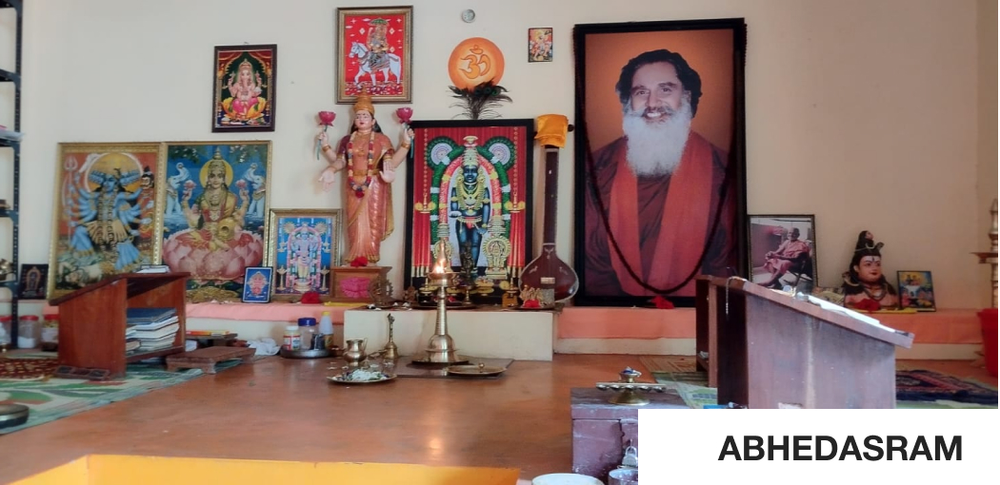

Hi,👋
We speak your language feel free to contact us


ഡോ. ബിജു അനന്തകൃഷ്ണൻ, ജനനം1971 മെയ് 30 , Dr. ബിജു അനന്തകൃഷ്ണൻ ആലപ്പുഴ ജിലയിൽ മാവേലിക്കര താലൂക്കിൽ തെക്കേക്കര കുറത്തികാട് ബിജുഭവനം അച്ഛൻ പ്രശസ്ത സംഗീതഞ്ജനും ഹാർമോണിസ്റ്റുമായ കുറത്തികാട് അനന്തകൃഷ്ണ പിളള അമ്മ പരേതയായ കമലമ്മാൾ . ബിജു അനന്തകൃഷ്ണന്റെ മകൾ സായി ലക്ഷ്മി ( ആമി ) പരമ്പരാഗത സംഗീത കുടുംമ്പത്തിലെ ഇളമുറക്കാരനാണ് ബിജു മുത്തച്ഛൻ കുറത്തികാട് പരമേശ്വരൻ പിള്ള ആശാൻ (പരമു ആശാൻ ) പഴയകാല നാടകങ്ങളുടെ സംവിധായകനും സംഗീതഞ്ജനുമായിരുന്നു. അമ്മയുടെ കുടുംബാഗംങ്ങളാണ് കഴിഞ്ഞ നൂറ്റാണ്ടിൽ നാടക സിനിമാ രംഗങ്ങളിൽ വ്യക്തിമുദ്ര പതിപ്പിച്ച ഓച്ചിറ കുട്ടീശ്വരൻ, ഓച്ചിറ വേലുക്കുട്ടി, കണ്ടിയൂർ പരമേശ്വരൻ കൂട്ടി, ആണ്ടിപിള്ള ഭാഗവതർ തുടങ്ങിയ മഹാ പ്രതിഭകൾ
ഡോ. ബിജു അനന്തകൃഷ്ണൻ ഏറ്റവും കഴിവുള്ള കലാകാരന്മാരിൽ ഒരാളുമായി തന്റെ സംഗീത യാത്ര ആരംഭിച്ചു, സംഗീതാചാര്യ ഗുരു ശ്രീ. കണ്ടിയൂർ അയ്യപ്പൻ ഭാഗവതർ, സംഗീതജ്ഞൻ ഡോ നടരാജപിള്ള അവിടെ കർണാടക സംഗീതത്തിൽ പ്രാവീണ്യം നേടി. ഹിന്ദുസ്ഥാനി സംഗീതവും അദ്ദേഹം പഠിച്ചു (സംഗീത വിശാരദ്) പ്രൊഫ. മനോഹർ കേഷ്കർ, തൻസെൻ സുർസംഘ്, തിരുവനന്തപുരം, പാശ്ചാത്യ ശാസ്ത്രീയ സംഗീതം എന്നിവയിൽ നിന്ന് സിംഗിംഗ് സ്ട്രിംഗ് വെസ്റ്റേൺ മ്യൂസിക് അക്കാദമിയിലെ ശ്രീ ജേക്കബ് ഇടിക്കുളയിൽ നിന്ന്. അവൻ പിയാനോയിലും സമർത്ഥനാണ്, കീബോർഡ്, ഹാർമോണിയം (ഹിന്ദുസ്ഥാനി/കർണാട്ടിക്), ഗിറ്റാർ, തബല, മൃദംഗം.


ബിജു അനന്തകൃഷ്ണൻ കർണ്ണാടക സംഗീത ചരിത്രത്തിലാദ്യമായി 2010 സെപ്റ്റംബർ 28 ന് 12 മണിക്കുർ തുടർച്ചയായി 300 ൽ അധികം രാഗങ്ങളുടെ ഡെമോൺസ്ട്രേഷൻ സ്വര സല്ലാപം എന്ന പേരിൽ കായംകുളം K P A C യിൽ അവതരിപ്പിച്ചു പിന്നീട് തിരുവനന്തപുരം കിഴക്കേക്കോട്ട അഭേദാശ്രമത്തിൽ 2012 ഏപ്രിൽ 22 ന് രാവിലെ 9 മണിക്ക് ആരംഭിച്ച് 23 ന് രാവിലെ 9 മണിവരെ തുടർച്ചയായി 24 മണിക്കൂർ 500 ൽ അധികം രാഗങ്ങളുടെ ഡെമോൺസ്ട്രേഷൻ സ്വര സല്ലാപം എന്ന പേരിൽ അവതരിപ്പിച്ചു.
ബിജു അനന്തകൃഷ്ണന്റെ സംഗീതരംഗത്തെ സമഗ്ര സംഭാവനകൾക്കും , യോഗ ധ്യാനം സംഗീതം എന്നിവ സമന്വയിപ്പിച്ച് മനുഷ്യമനസുകൾക്ക് ഉണർവ്വും ഉന്മേഷവും ഊർജവും പകരുന്ന സംഗീതധ്യാനം, മ്യൂസിക്ക് മെഡിറ്റേഷൻ എന്ന നൂതന പദ്ധതി ആവിഷ്ക്കരിച്ചതിനും 2019 ൽ (1/6/2019)ഇന്റർനാഷണൽ പീസ് യൂണിവേഴ്സിറ്റി ഹൊസൂറിൽ വെച്ച് (Tamilnadu ) ഡോക്ടറേറ്റ് നൽകി ആദരിച്ചു കൂടാതെ ബിജു അനന്തകൃഷ്ണന്റെ സംഭാവനകളെ മാനിച്ച്
- 2000 ത്തിൽ SHVP സനാതന സംഗീത കലാരത്നം
- 2012 വാരണപ്ള്ളി മഹാദേവ ക്ഷേത്രം രാഗശ്രീ
- 2013 കർണാടകയിൽ നിന്നും ബസവസംഗീത ശ്രീ
- 2013 സ്വരചൈതന്യ
- 2013 സ്വാതന്ത്ര്യ സംഗമ യാത്രാ പുരസ്ക്കാരം
- 2014 ശൈവ സംഗീത വരം
- 2014 ഗുരു പ്രസാദം
- 2015 ബസ്റ്റ് മ്യൂസിക്ക് ഡയറക്റ്റർ അവാർഡ്
- 2015 ശൈവ ഗീതി
- 2016 സംഗീതശ്രേഷ്ഠ
- 2017 ഫ്രണ്ട്സ് @ ഒണാട്ടുകര പുരസ്ക്കാരം
- 2018 ഉമാമഹേശ്വര കീർത്തി മുദ്ര
- 2018 ദില്ലി മണ്ഡലപൂജ മകരവിളക്ക് പുരസ്ക്കാരം
- 2019 കാട്ടിൽമേക്കതിൽ ക്ഷേത്ര പുരസ്ക്കാരം
- 2020 എസ് കെ സിനി ഹോം ദേവസംഗീത പുരസ്ക്കാരം
- 2020 ഐശ്വര്യാ ക്രിയേഷൻസ് ലൈഫ് അച്ചീവ്മെന്റ് അവാർഡ്
- 2021 ഓഡിപ്ലസ് മൂവി പുരസ്ക്കാരം
- 2022 തിയോഡേഴ്സ്ക്രിയേഷൻ റിഥം ഓഫ് ബതലഹേം
സംഗീത പുരസ്ക്കാരം കൂടാതെ വിവിധ ആർട്ട്സ് & കൾച്ചറൽ സംഘടനകളിൽ നിന്നും അനവധി പുരസ്ക്കാരങ്ങൾ ലഭിച്ചിട്ടുണ്ട്
01/06/2019 ന് ഇന്റർനാഷണൽ പീസ് യൂണിവേഴ്സിറ്റി, ജർമ്മനി അദ്ദേഹത്തെ ഹോണററി ഡോക്ടറേറ്റ് നൽകി ആദരിച്ചു. 35 വർഷത്തെ കലാ സേവനവും ശാഖയുടെ രൂപീകരണത്തിന് നൽകിയ സമഗ്ര സംഭാവനകളും സംഗീത ധ്യാനം എന്ന് വിളിക്കപ്പെടുന്ന സംഗീതം.

യോഗ, ധ്യാനം, പ്രകൃതിചികിത്സ, തുടങ്ങിയ ഈ എല്ലാ ഇന്ത്യൻ വസ്തുക്കളോടും കൂടിച്ചേർന്ന സംഗീത ധ്യാനം. കർണാടക, ഹിന്ദുസ്ഥാനി, പാശ്ചാത്യ സംഗീതം പൂർണ്ണമായും ഓപ്പറയ്ക്ക് സമർപ്പിച്ചിരിക്കുന്നു. അദ്ദേഹം പറയുന്നു "സംഗീത ധ്യാനം എ ഉത്കണ്ഠ, കാഠിന്യം, പിരിമുറുക്കം, നിരാശ, ഭീരുത്വം, തുടങ്ങിയ ജീവിതശൈലി രോഗങ്ങൾക്ക് സ്ഥിരമായ ശമനം ദേഷ്യം, സമ്മർദ്ദം, മൈഗ്രെയ്ൻ, അതുപോലെ 50% ഡിസോർഡേഴ്സ്".
സംഗീതത്തെ ദൈവത്തിന്റെ വരദാനമായി കാണുന്ന Dr. ബിജു അനന്തകൃഷ്ണന്റെ നൂതനാശയമായ മ്യുസിക്ക് മെഡിറ്റേഷൻ ആസ്വാദനത്തോടൊപ്പം ആശ്വാസവും ആനന്ദവും പകരുന്ന ഒരു സംഗീത പദ്ധതിയാണ്
ഡോ. ബിജു അനന്തകൃഷ്ണൻ കുടികൊള്ളുന്ന ദേവതകളെക്കുറിച്ച് നിരവധി ഭക്തിഗാനങ്ങൾ രചിക്കുകയും ആലപിക്കുകയും ചെയ്തിട്ടുണ്ട്. ഓച്ചിറ, കൊടുങ്ങല്ലൂർ, ചെട്ടികുളങ്ങര, മണ്ടക്കാട്, വെട്ടിക്കോട്, ഹരിപ്പാട് തുടങ്ങിയ മഹാക്ഷേത്രങ്ങളിൽ കുറക്കാവ്, കാട്ടിൽ മേക്കതിൽ, ശബരിമല ദ വിഷ്വൽ എന്നിവ സൃഷ്ടിച്ചത് Mr.സജി കെ പിള്ളയാണ്, ഇത് നിർമ്മിച്ചത് എസ്.കെ. സിനി ഹോം, ഐശ്വര്യ ക്രിയേഷൻസ്.